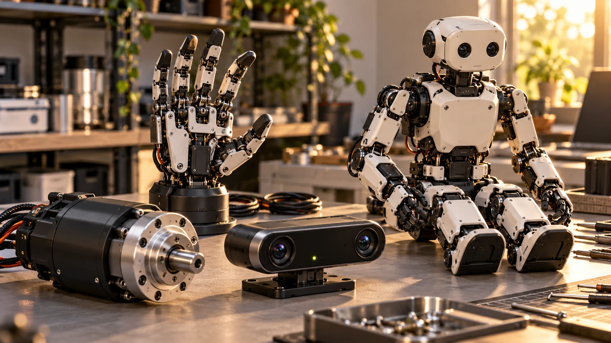

Useful discovery connects an identifiable product to a clear commercial path and an accountable source.
A robotics marketplace has to explain more than product names and prices. Some listings lead to a store, others to a research platform or an enterprise conversation. The value is in making those differences understandable so that engineers, buyers, and curious builders can take an appropriate next step.
Keep different hardware categories visible
A complete robot, a component, and a development kit answer different needs. Organize them so visitors can discover the right category without assuming that everything is a ready-to-deploy solution. A useful component listing also explains that compatibility depends on the surrounding system.
Describe the commercial path
Distinguish a published price from a quote request, a reservation, or a technology showcase. A deposit is not the full cost of a robot. A future delivery plan is not current stock. These distinctions make a catalog more useful without requiring it to invent certainty where the seller has not provided it.
Make the source easy to inspect
Link to the manufacturer’s exact product or documentation page where possible. Record the configuration and the date on which information was reviewed. Give unknown values a clear label. Visitors should be able to understand the basis for a claim without searching through a generic company homepage.

Support the next conversation
A good discovery experience helps someone arrive at a manufacturer with better questions. It can support a shortlist, a configuration discussion, or a development plan. That is a meaningful first step even when procurement, integration, and deployment still happen through a more detailed business process.
Design a listing around a buyer's questions
A useful listing begins with an identifiable product and the role it plays in a system. For a complete robot, that might mean a research platform or an application offered through a sales conversation. For a component, it might mean an actuator, sensor, hand, or controller. For a kit, explain whether the package is intended for assembly, software development, or experimentation with a particular subsystem. The category should help visitors understand what they would actually receive.
Add a compact configuration note where the product name alone is ambiguous. An interface variant or optional hand can materially change a technical evaluation. Link the claim to the relevant official page and show when it was reviewed. These details make a marketplace more useful as a discovery tool even when the final purchase happens directly with the supplier.
Give compatibility its own evidence
A component appearing beside a robot in a catalog does not establish that they work together. A useful compatibility record would identify the robot model, component variant, required adapter or controller, and the source supporting that combination. Where those details have not been confirmed, say that integration needs evaluation. This gives visitors a practical question to take to the manufacturer rather than an assumption that may fail after purchase.
Consider a development controller listed near a dexterous hand. Both may be relevant to robotics research, but the connection depends on interfaces, power arrangements, software support, and the intended control approach. The marketplace can help by making those information fields visible. It should not imply a tested bundle merely because two products share a category, a communication term, or a visually similar connector.
Make maintenance part of catalog quality
Product information needs an update process. Keep a source review date, preserve the exact model designation, and record when an official link no longer resolves to the expected product. A changed link should trigger a review rather than an automatic rewrite based on a search result. If a manufacturer introduces a new generation, create a clear distinction instead of silently replacing the specifications attached to an older listing.
A useful review queue can prioritize records with published prices, time-sensitive availability language, or broken source links. Visitors should also have a straightforward way to report an unclear listing. Over time, these small maintenance habits matter as much as the size of the directory. A catalog with fewer well-explained records can support better decisions than a much larger collection that obscures variants, commercial states, and the age of its evidence. Growth should improve the visitor's next conversation as well as increase the number of cards on the page.
Your next step.
- Separate product categories and commercial states.
- Connect claims to model-specific sources.
- Help visitors identify their next useful question.
Sources & further reading
Primary sources and manufacturer documentation for the examples and further investigation. Recommendations in this article are HUMANOID’s editorial guidance.
Unitree: official humanoid collection ↗ROBOTIS: educational kit range ↗Originally prepared and references reviewed: 24 October 2026. Expanded with practical guidance and original illustrations: 25 October 2026. Editorial archive date: 28 Apr 2026. This is original editorial content, not a record of a historical product launch, independent test, or purchase.